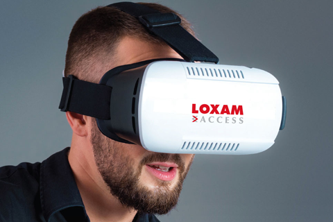
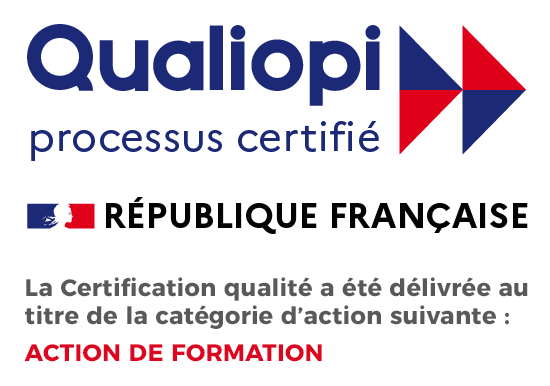

Loxam Formation est une entité du Groupe LOXAM, qui offre une large gamme de formations réglementaires et certifiantes, partout en France grâce à son réseau d'agences et d'organismes partenaires.
Notre catalogue comprend plus de 50 références, pour répondre à tous les besoins opérationnels et techniques des professionnels :
- CACES®,
- Formations réglementaires pour la prévention des risques professionnels: la santé physique, les travaux à proximité des réseaux (AIPR), l'utilisation d'échafaudages, le travail en hauteur, le montage et l'utilisation d'échafaudages fixes et roulants,
- Des formations de formateur
- Des formations reconnues à l’international via l’IPAF
Notre équipe d'experts vous fournit une formule sur-mesure qui respecte vos impératifs : programme, outils pédagogiques, simulateur de réalité virtuelle, déplacement sur chantier ou en entreprise... Les démarches administratives et le suivi de votre dossier sont réalisés par nos équipes, pour vous fournir une assurance clé en main.
Depuis 2022 Loxam Formation est certifié Qualiopi, gage de la qualité des prestations. Cette certification honore les pratiques de formation dispensées dans nos centres et confirme notre engagement pour la sécurité de nos partenaires et nos équipes. En 2023, nous avons prodigué plus de 5 000 h de formations.

Notre expertise à votre disposition
Une solution clé en main :
- Un interlocuteur unique en France qui vous accompagne dans vos démarches et organise votre session de formation.
- Des salles de formation équipées au sein de notre réseau d'agences, avec parking privé.
- Des vestiaires avec armoire individuelle fermées.
- Des plateaux techniques et terrains conformes à la réforme CACES® 2020.
Des formations sur-mesure :
- Programmes dont les durées par session, débutants ou confirmés.
- Une formation théorique.
- Une mise en situation à la création de la réalité du chantier avec un matériel adapté à l'enseignement.
Comment ça marche ?
Les formations s’effectuent en groupes adaptés à la session initiale ou recyclage d’une formation avec :
- Une formation théorique,
- Une mise en situation en conditions réelles de chantier avec un matériel adapté à l'enseignement.
Pré-requis :
- Être âgé de 18 ans minimum,
- Présenter les aptitudes médicales requises,
- Maîtriser la langue française, à l'écrit comme à l'oral,
- Porter des équipements de protection individuelle.
Gagnez du temps grâce à notre site internet :
- Accédez en ligne au catalogue des formations LOXAM.
- Visualisez les disponibilités de chaque site de formation.